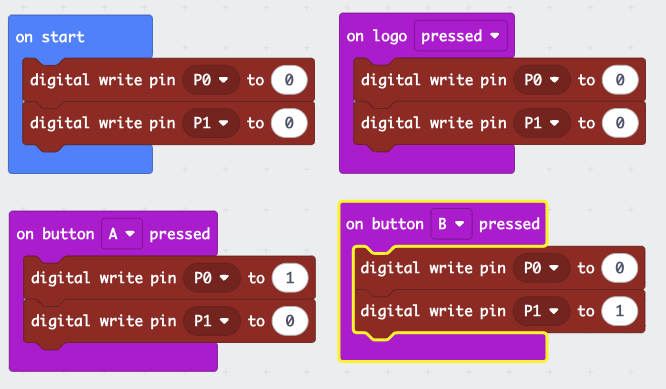
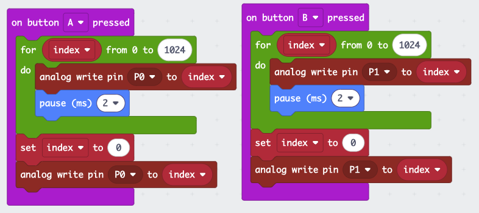

Speed and Direction
Objectives:
- Students will write a MakeCode program that controls motor direction using buttons
- Students will use
analog write to control motor speed with a variable duty cycle
- Students will explain the relationship between duty cycle and motor speed
Materials:
- 1 Micro:bit with USB cable per student
- 1 breakout board per student
- 1 L9110 H-Bridge driver board (already wired from previous lesson)
- 1 small brushed DC motor (already connected)
- Battery pack with USB cable
Timing:
- 0-5 min: Review H-Bridge wiring and safety rules from previous lesson
- 5-10 min: Demonstrate the button control program; explain digital write logic
- 10-20 min: Students download and test the button control program
- 20-25 min: Introduce
analog write and duty cycle concept for speed control
- 25-35 min: Students download and test the speed control program
- 35-40 min: Challenge time for faster students
Key Concepts:
- Writing a 1 to one INT pin and 0 to the other sets motor direction
- Writing 0 to both INT pins stops the motor
analog write sends a PWM signal that controls motor speed (higher value = faster)- The duty cycle percentage determines how much power the motor receives
Common Mistakes:
- Writing 1 to both INT pins simultaneously (brakes the motor instead of spinning)
- Forgetting to stop the motor before reversing direction (hard on the gears)
- Confusing
digital write (full on/off) with analog write (variable speed)
- Setting analog write value too low for the motor to overcome static friction
Assessment Cues:
- Student can make the motor spin forward, backward, and stop on command
- Student can explain why the motor speeds up as the analog write value increases
- Student can modify the program to change speed or add new button behaviors
Differentiation:
- Struggling: Start with just the button control program; skip speed control until comfortable with direction
- Advanced: Combine direction and speed control in one program; add accelerometer-based tilt steering
Now that your H-Bridge is wired, you can write a program to control the motor.
The key idea is:
- To spin one direction: write 0 to P0 and 1 to P1
- To spin the other direction: write 1 to P0 and 0 to P1
- To stop: write 0 to both pins
Here is a program that uses buttons to control direction:

You can import this program from GitHub:
https://github.com/League-Microbit/H-Bridge-Control.git
After downloading the program, press the A button to turn the motor one
direction, the B button to turn it the other, and the logo (the touch
sensor between the buttons) to stop the motors.
Tip
If the motor spins the “wrong” way when you press A, you can either swap the
red and black motor wires on the terminal block, or swap the P0/P1 pin assignments
in your code.
Speed Control with Analog Write
You can also control the speed of the motor using the analog write command.
Instead of writing a simple 1 or 0, analog write sends a PWM signal with a
variable duty cycle. A higher value means the motor gets more power and spins
faster.
Here is a program that demonstrates speed control:

You can import this program from GitHub:
https://github.com/League-Microbit/duty-cycle-buttons
When you press the A or B buttons, this program writes a square wave
duty cycle signal to the H-Bridge using the analog write feature, which will
start the motor running slowly, then speed it up.
Tip
If the motor does not start spinning at low values, try increasing the starting
value. Small motors often need a minimum duty cycle to overcome friction and
begin turning.
Challenges
Ready for more? Try these:
- Ramp up and down – Write a program that gradually increases speed, holds
at full speed for 2 seconds, then gradually decreases back to zero.
- Speed selector – Use button A to cycle through 3 preset speeds (slow,
medium, fast) and button B to reverse direction.
- Two-motor control – Wire the second H-Bridge channel and control two
motors independently.
Warning
Remember: always disconnect Vcc first before changing any wires, and connect
it last when re-wiring.